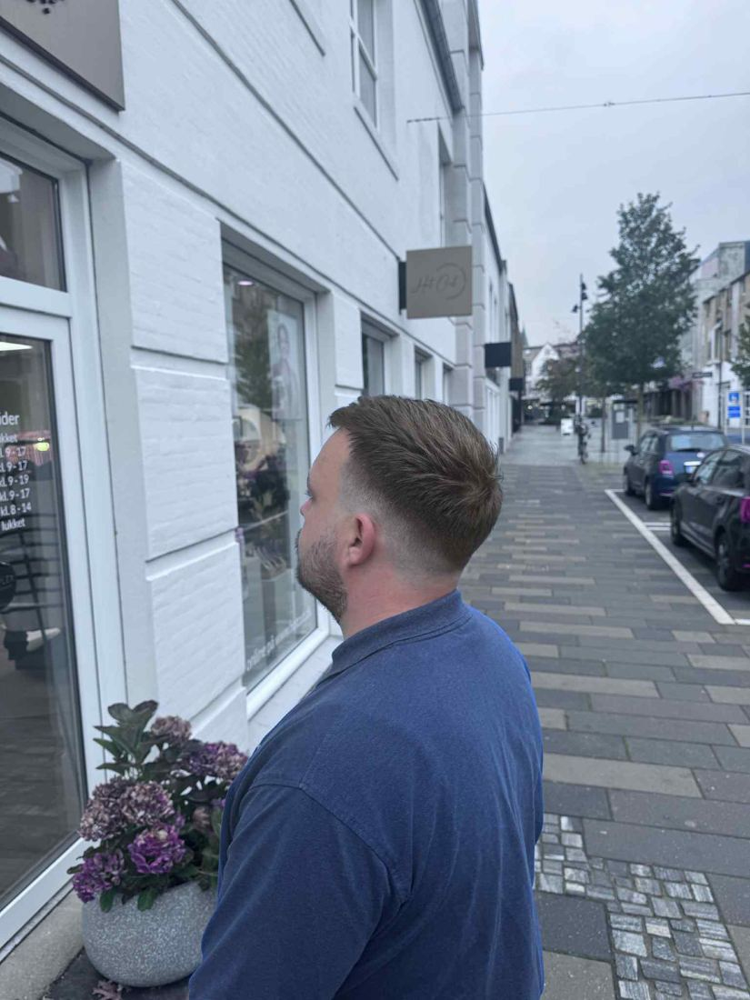

Which men’s cut suits you?
No two heads of hair are the same. These are some of the cuts we do most often in the salon:
- Fade: modern and clean, with a gradual transition at the sides.
- Crew cut: classic, short and easy to maintain.
- Textured crop: short at the sides with texture on top. Looks considered and almost styles itself.
- Undercut: sharp, short sides and a longer top.
- Classic side parting: an elegant look that never goes out of fashion.
We advise you on what suits your face shape, hair type and lifestyle. To see what is coming in, read about men’s haircuts for autumn 2026.
Cuts by face shape and hair type
- Round face: a fade or crew cut adds definition.
- Square face: a classic side parting or longer hair with texture.
- Fine hair: shorter cuts such as a crew cut, fade or textured crop make hair look fuller.
- Long hair: layers, a relaxed wavy style or a man bun. Long hair also needs the right care to avoid split ends.

Beard trims
A sharp cut deserves a well-kept beard. We trim your beard to suit your face shape and haircut, with a crisp line or a softer, natural shape. A beard trim costs DKK 150 and can be booked together with your cut.
Growing your hair out?
It takes patience, and it actually takes haircuts. Have it trimmed every 8 to 12 weeks to avoid split ends, and get a well-cut in-between style as it goes from short to medium. That way you look tidy the whole way through.
Your barber in Herning
We are a local salon at Søndergade 12, and many of our male clients have a regular slot with us. We cut men and boys of all ages, for everyday life, work and special occasions. Boys’ cuts (9–12) cost DKK 310, and children’s cuts start at DKK 240. See the full price list.